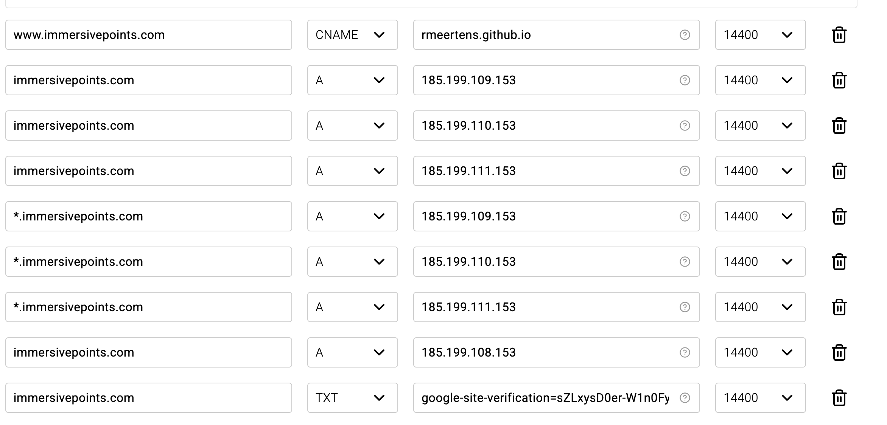
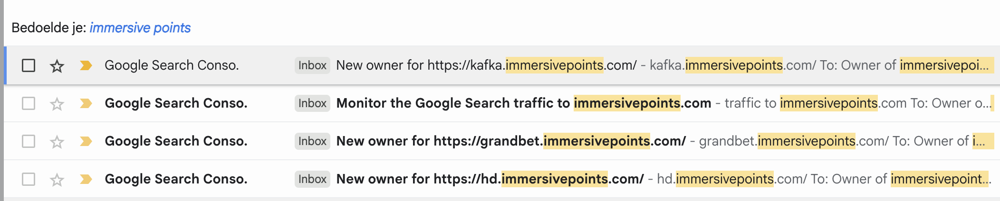

The last few weeks I traveled through Africa, with barely any internet. At some point I got an email from Google Search Console about a new owner for the domain https://kafka.immersivepoints.com/.
Weird… My immersivepoints.com domain is only used for one website hosted as a GitHub page. The website is for my 3D and VR point cloud visualizer, which in practice is just a simple hosted html page. There definitely is no Kafka involved here, let alone that I knew the new owner of this subdomain.
After I regained access to a normal speed internet connection I started digging. First check was my DNS records, but initially nothing seemed off there. I simply forwarded the domain to the servers of GitHub, with a wildcard to also catch any subpage (such as www.immersivepoints.com).

That’s unfortunately where the problem was…
GitHub pages is an amazing feature of GitHub! It allows you to host a static webpage for your GitHub account, a repository, or just a cool project you want to show off! I use it a lot for my own website and blog (including what you read here), and it enables you to quickly and easily show off projects to friends without messing with individual servers (or even paying for the hosting of projects nobody uses anyways).
Setting up a GitHub page is easy: in your DNS records you point the domain you want to host to the IPs where GitHub hosts your page. On your GitHub repository you configure the URL of your website (which ends up in your repository as a CNAME file). Normally you point one domain to these GitHub servers, and I assumed that only one GitHub user can ‘own’ a domain. That is: I assumed that only I could make subpages for *.immersivepoints.com. I guess I was wrong.
It looks like GitHub always tries to resolve any domain, as long as there is any repository which has this CNAME file. In this case someone set up kafka.immersivepoints.com. They even did this from a private GitHub repository, which means I can’t even flag that specific repository. Because my DNS settings forwarded everything of this domain to GitHub anyone could use or abuse my domain.
This problem is not new, I already found a couple of tools (ironically hosted on GitHub) which would help you find domains which are available to steal! For example, this one: https://github.com/EdOverflow/can-i-take-over-xyz. In my case I don’t know how long my domain has been abused this way, and would have never noticed if I did not set up Google Search Console for myself last month. In the end I noticed a few more emails from Google Search Console - as in the past weeks I was updating my blog anyways I completely missed these!

I hope nobody fell victim to the undoubtedly shitty slot machine scam sites which were hosted on my domain. As Google already has issues indexing my blog and pages I guess not a lot of people will have found these subdomains.
This brings me to the question of “who is at fault here”. I guess I should have better set up my DNS records, but I did not have a good understanding of DNS records (and still don’t really understand them). Personally I think it would be good if there is better verification on the GitHub side of who owns a domain, or which users are allowed to build on top of their subdomains. For example, if two different users want to use the same high level domain, let the first user verify that the other user is allowed to host a GitHub page there. Another option could be adding a specific TXT record on the DNS side for each GitHub user which is allowed to use your subdomain. I’m not sure how big this scam is, but every bit helps!
Last but not least, I reported the pages to GitHub, and hope that the account which hosts them gets banned! I didn’t hear anything back yet.